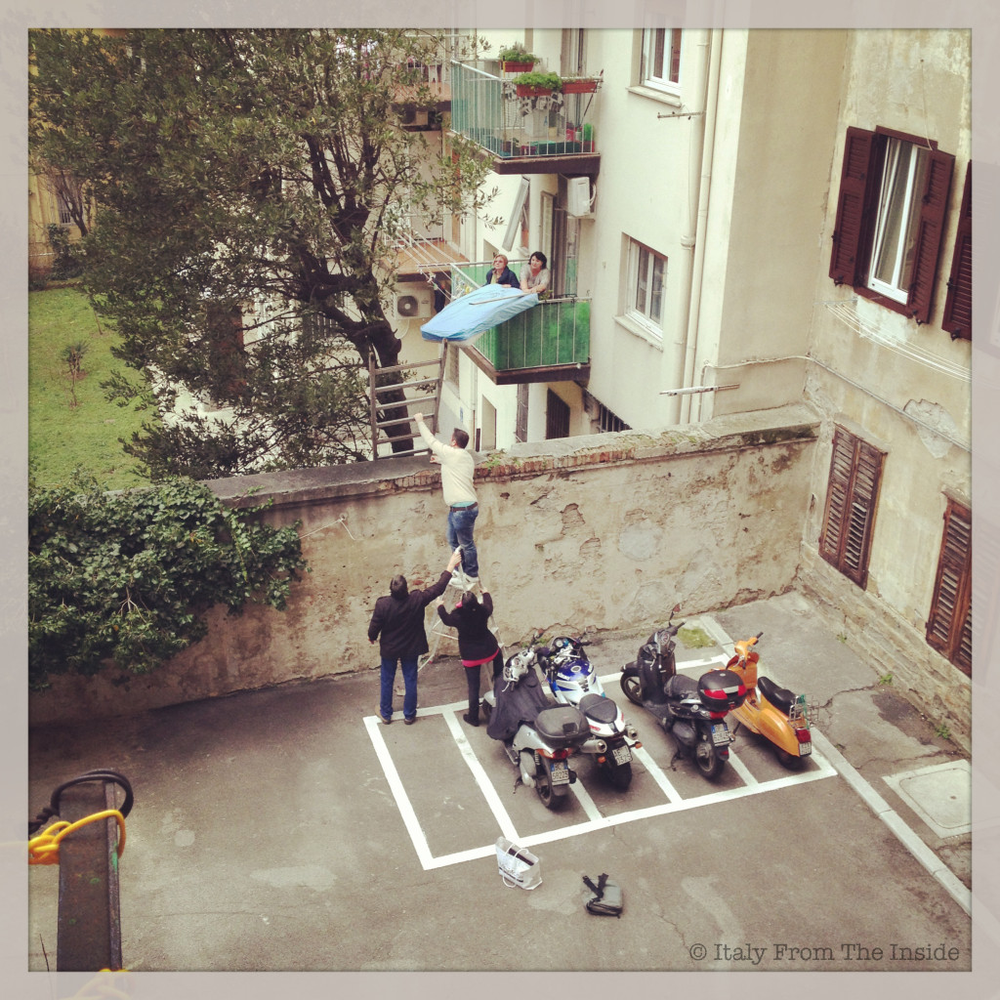

So, here's what happened: one day I was "happily" hanging my clothes outside, when I saw this rescue team trying to help a cat who got stuck in a tree. The kitty's bad decision had the power to demobilize 5 people, 2 ladders and one mattress. I have no idea how the cat got there neither I know how the story ended. My believe is that the gattino eventually made it for the joy of its rescuers. He was luckier than my friend's cat who fell down the 5th floor of the nearby building while "peeking" outside. Poveretto.